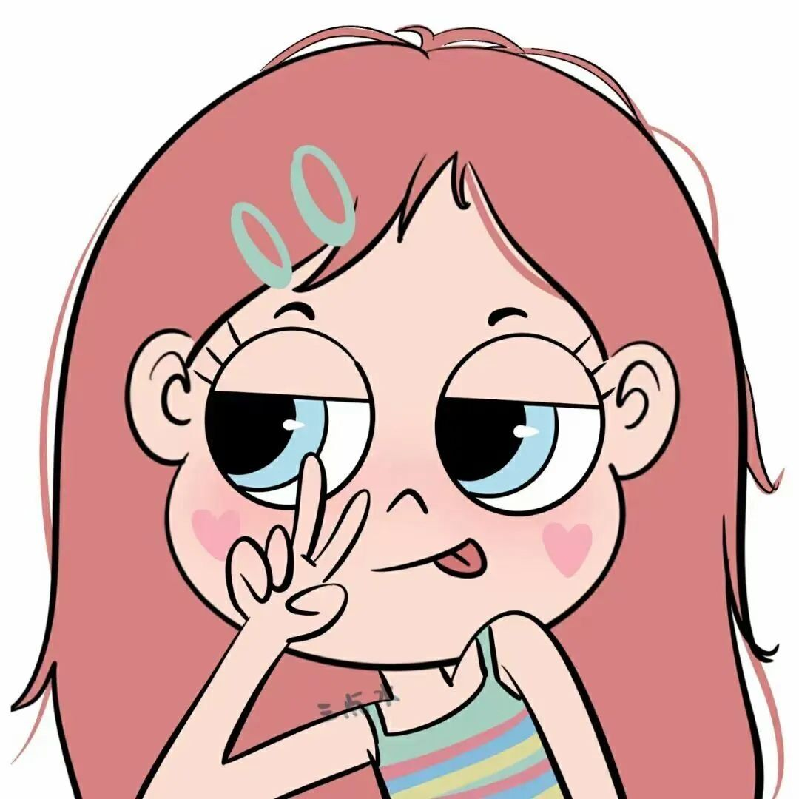

个人信息

姓名: 肖蔷
性别: 女
出生日期: 2000年12月
QQ: 2862445727
基本信息:
名叫肖蔷，性别女，出生于2000年12月，民族为汉族，是江西人
性格比较外向，活波开朗，善于与他人交际
爱好是喜欢游泳、摄影
很喜欢的一句话是:知足而上进，沉稳后爱人
如果可以的话，想出去走一走，看看外面的世界
希望我们可以成为朋友呀！
教育经历
毕业于南昌理工学院
在校期间所学的专业是美术设计，主修的课程有字体设计、立体构学习、数码摄影、平面广告设计、包装设计、书籍装帧设计、版式设计
能够熟练运用微软Office办公软件(word、Excel、PowerPoint等)和Photoshop软件
计算机网络及多媒体知识
性格特点
活泼开朗
性格上:
性格开朗外向，为人坦率热情，有着积极乐观的心态，也有良好的沟通能力
对待朋友能够热情友善，喜欢与人打交道，热于帮助他人
且适应能力强，能够快速地适应新的生活环境和工作环境
做事情认真仔细，不会马虎了事，能够仔细的核对好各个细节
做事有自己明确的想法和计划
性格上的缺点
时常口无遮拦，很容易伤害他人内心，没有顾及到他人感受
不能够很好地站在他人的角度照顾到周围人的感受
在以后
在说话前要先在脑海里过滤一遍，减少因为你自己说话不当而对他人造成伤害情况的发生。
在校获奖
在校获奖情况
2021年7月 获得第八届青年摄影大赛全国优秀作品
2021年9月 获得南昌理工学院优秀学生干部
2021年11月 获得BICC中英国际创意大赛铜奖
2022年1月 获得英国生态设计奖 铜奖
2021年11月 获得第三届台湾国际大学生年度义属奖 铜奖
2022年1月 获得铸剑杯·纪念人民军工文创大赛全国三等奖
2022年1月 获得第三届香港当代设计铜奖
2022年1月 获得第三届香港当代设计银奖
2022年1月 获得英国生态设计银奖
2022年5月 获得CADA日本概念艺术设计奖 先进奖
2022年5月 获得CADA日本概念艺术设计奖 三等奖